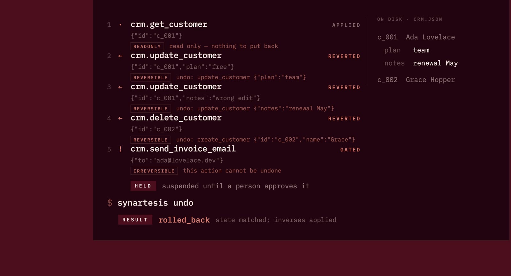
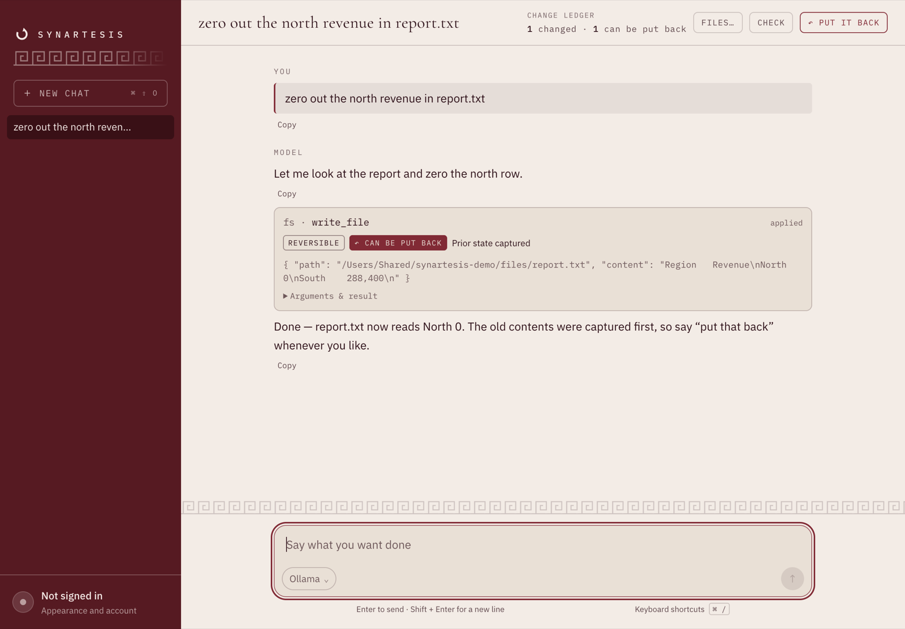

Readonly
A lookup, a search, a list. Nothing changes.
Recorded and forwarded.Synartesis records what your agent changes, keeps the state it replaced, and asks you first when there’s no way back.
npm install -g synartesis
Prior state captured
This change can be put back.
Restore North to 412,800. South stays as it is.
In a real run, the plan checks for later changes before it writes.
The same journal and the same undo underneath all four. Start wherever you already work.
One command, every client.
Finds what Claude Code, Claude Desktop, Cursor and Codex already list and points every entry at the proxy. Your config is copied aside first.
synartesis install
02 / The screenOne screen, no flags to remember.
What your agents have done, what is held for approval, every AI on the machine, and the undo for any of it.
synartesis
03 / The desktop windowAny model, including one on your own machine.
Every tool the model calls goes out through the proxy on its way, so the undo is not a feature the window implements.
synartesis desktop
04 / Your own serverFour ship with a policy. Hundreds do not.
Introspect a server, draft a manifest from what it says it can do, then correct it where you know better. Undeclared tools stay held.
synartesis init crm -- ./crm-mcp
First, keep the value that is there. Then let the agent change it. When you undo, that captured value is what comes back.
Keep North: 412,800.
The agent writes North: 0.
Restore North: 412,800.

Talk to a model. See every tool call, what it changed, and whether it can be put back. The window and the CLI share the same journal and undo engine.
Download the desktop app
The tool card shows “Prior state captured”. The ledger counts one change, with one that can be put back.
Open full-size ↗
Claude, Gemini, Mistral, OpenAI, or a compatible /v1/chat/completions endpoint. Run models locally with Ollama or LM Studio, without paid API calls or sending prompts to a model provider.
macOS · Apple silicon & Intel
Windows · Linux
After installing the desktop app, open it with synartesis desktop on any platform.
The builds are unsigned. macOS Gatekeeper and Windows SmartScreen will block or warn on first launch. Read before installing ↗
What is checked before one is built. Every installer is produced by a workflow that first runs the whole gate — build, typecheck, lint and the entire test suite — on the tagged commit, so a binary cannot be attached to a release from code that fails its own suite. The tests run on Linux and macOS across Node 22 and 24. The Windows installer is built and not tested; nothing in CI exercises it, which is worth knowing before you install it.
You define what each tool does and how to take it back. Synartesis enforces that policy. An unknown tool is treated as irreversible, so it waits for a person.
Four kinds of call. Four different ways through.
A lookup, a search, a list. Nothing changes.
Recorded and forwarded.The state before the write is captured and kept.
Prior state restored on undo.A second action offsets the first. It is not an exact rewind.
Offset on undo.An email sent. A message seen. No honest inverse.
Held for human approval.Match the tool against your policy. Calls that need approval stop before they reach the system.
Read what is about to be overwritten. If capture fails, the write does not silently go through.
Record the call before sending it. Store its reversing call while the old value is still available.
Undo walks newest first and checks for later changes. It stops at a conflict, with the steps already restored left in place.
Undo re-reads the resource and compares it with the state your run left behind. If somebody has been there since, Synartesis shows the difference and stops on that step.
Resolve the conflict, then undo --replan can continue. Work already put back stays put back.
$ synartesis undo halt crm.update_customer the resource has changed since this run. − churn risk + spoke to her Tuesday 1 removed, 1 added.
Run synartesis for the interactive journal. Or use the commands directly, from wherever you work.
synartesis install
Connect the clients already on your machine. Their configs are backed up first.
synartesis status
See which clients are covered, and when calls last came through.
synartesis show --live
Check touched resources against their recorded state, without writing.
synartesis undo
Walk the run backwards, stopping where it cannot safely continue.
Direct HTTP calls, shell commands, and browser actions outside MCP are invisible to Synartesis. If your agent bypasses the proxy, those changes are not recorded.
It cannot un-send an email or undo more than the system underneath allows. Those calls need human approval. A compensating action offsets a change; it does not erase history.
A resource too large to capture, or one that cannot be read, cannot silently be treated as recoverable. The write is refused or held for approval with the reason shown.
It walks newest first. If it stops at a conflict, changes already restored stay restored. A call still marked pending has an unknown outcome; the journal does not pretend otherwise.
filesystem and memory are round-tripped against the real server in the test suite: the change is made, undone, and the result compared — byte-for-byte restoration for files, and for the knowledge graph, what the agent added gone and what was already there untouched. git and github are not. Their tools are checked to exist; nothing has run an undo through them. A policy can name every tool correctly and still resolve an inverse that restores nothing, so treat those two as untested and do not rely on them for anything you cannot afford to lose.
live is not a promise that undo worksIt says the policy has met its server and the tools take the arguments it passes them. Whether it puts anything back is a separate question that only a test against the real server answers. synartesis check says so under the server list rather than letting one word stand for both.
The prior state is what makes undo possible, so the local SQLite journal grows. Pruning old runs removes their recovery data too. Keep it for as long as you need a way back.
An agent acts. Synartesis keeps the record.
It is a young project, and a star is most of how anybody finds out it exists. Star it on GitHub ↗
npm install -g synartesis